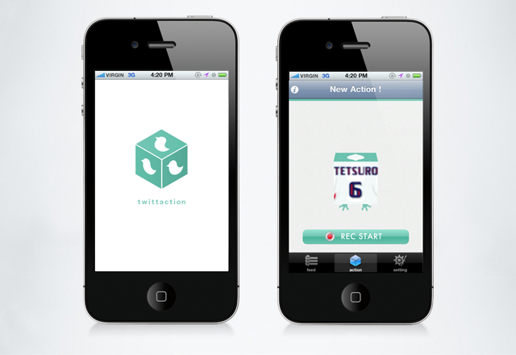

twittaction - iPhone APP
iPhoneを持ってアクションして、ツイッターに感情をつぶやこう！
ツイッタクション(twittaction)は、あなたが動かしたiPhoneの動きを、ツイッターを見ている友達に伝えることができるツイッタークライアント。
文字だけでは伝わらない感情を、iPhoneを使ってアクションで表現しよう！
[使い方]
- 1.
- ・iPhoneを傾けると、あなたのツイッターアイコンも傾きます
- 2.
- ・最大7秒間、iPhoneを動かして、アクションを記録します
- 3.
- ・リプレイでアクションを確認したら、テキストメッセージを加えてツイート！
- 4.
- ・ツイッタータイムラインに、あなたの動きが記録されたURLがつぶやかれます
- 5.
- ・あなたの友達はツイッタクションかブラウザから、あなたのアクションを見ることができます！
(アクションの再生ページはInternetExprorerには対応していません)